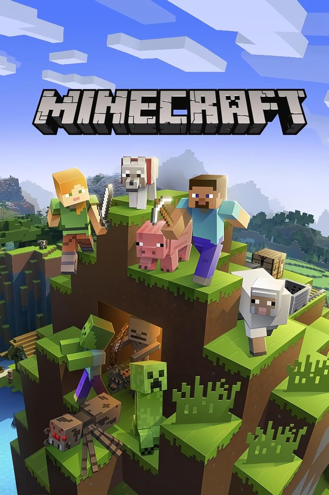
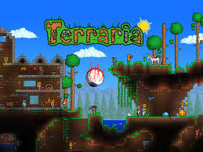

Minecraft

This is one my favourite games because it was my part of my childhood and I still play it to this day, I still play with friends too and it never gets boring, the endless things you can do and fight and not to mention, its unique music soundtrack that makes the game just that nostalgic
Terraria

I always loved how complex and action-heavy this game was, it gave me so much trouble and anger when I couldn't beat an enemy, I loved the different weapons and classes you could be and the lore behind the game too, just one of those games where the community is the best and the game never dies!
Call of Duty

Call of duty is also a fun game where I had alot of fun with, I always bought some of the newest ones if it ever came out and enjoyed my time, whether it was playing the story, going against other people arund the world or defeating zombies, round after round. It has so much variety, I couldn't stop and every game, it kept getting better!